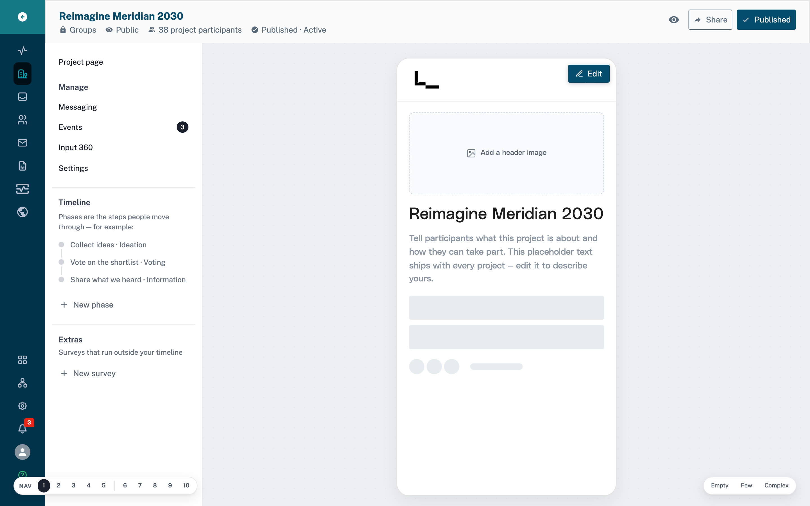
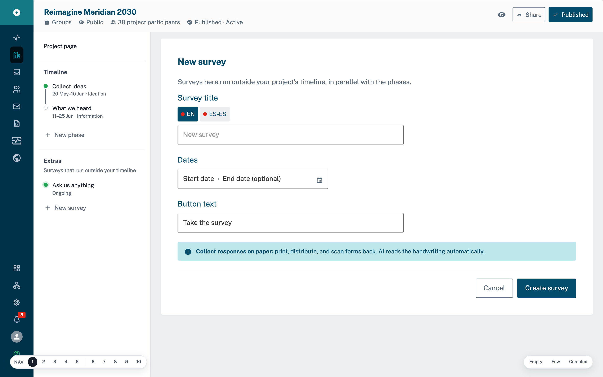
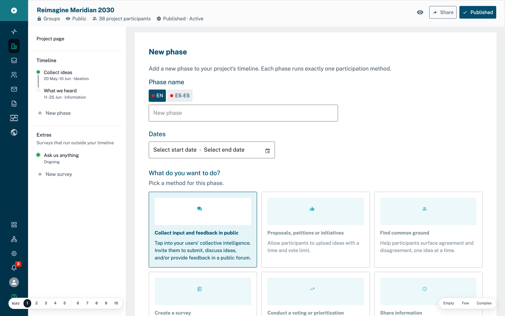
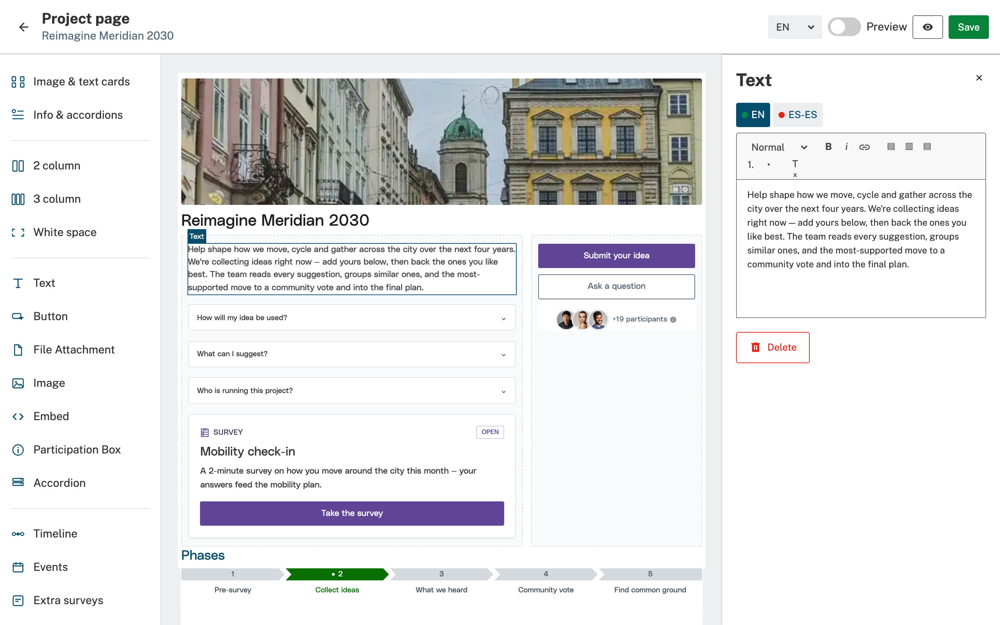
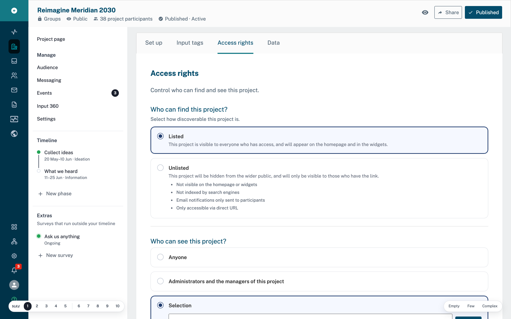
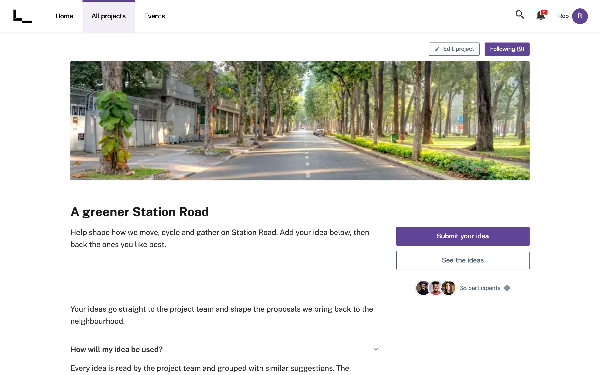
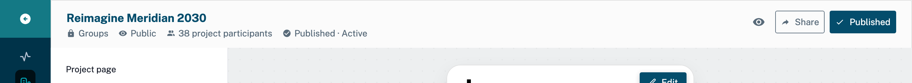

A usability test of the project editor — built on parallel-editor-builder v3.
They wanted a simple SurveyMonkey. They were told the city already pays for an engagement platform. They get invited into a GoVocal project — and they'll use it exactly once.
Participation departments hand off shells to non-tech-savvy people in other teams. That one-timer is the real user — so a failure here is a design failure, not a training gap. There is no second visit to get good.
GoVocal runs on one spine: Project → Phase → Method, one method per phase. A SurveyMonkey brain thinks “add a survey” is a button. We watch whether the UI closes that gap on its own.
An empty shell, handed off. Then we ask them to:
One end-to-end journey. Failing some is the point — each break is a learning.

Two doors: a “New survey” in Extras — or “Survey” as a method inside a phase. Which do they take? Do they ever notice methods live inside phases?

The product's “correct” path makes a survey a method inside a phase. If they land here instead, did they understand why?

These are click-to-edit blocks in the project builder — the page edits itself. Do they realise that, or hunt for a settings form?

Do they set access on purpose — or freeze on the jargon (“Listed / Unlisted”) and leave whatever's there?

The SurveyMonkey reflex is “share a link to check it.” Do they look for that — and is there a real path, or only this on-screen preview?

They're hunting “Send / Share”, not “Publish.” Do they find it — and do they understand what it commits them to?

To answer “does the reorg improve things,” show both editors. The delta is the deliverable — absolutes lie.
A one-timer is single-use: once they've done it on one editor they're no longer naive. Different people per arm.
Recruit for low digital literacy, first-time, no pre-reading. Same handoff shell across arms.
Per goal: clean · struggled · wrong-door · abandoned. Headline = which goal kills the most people, and where they quit.
Next: review with Irene before any build or recruitment.